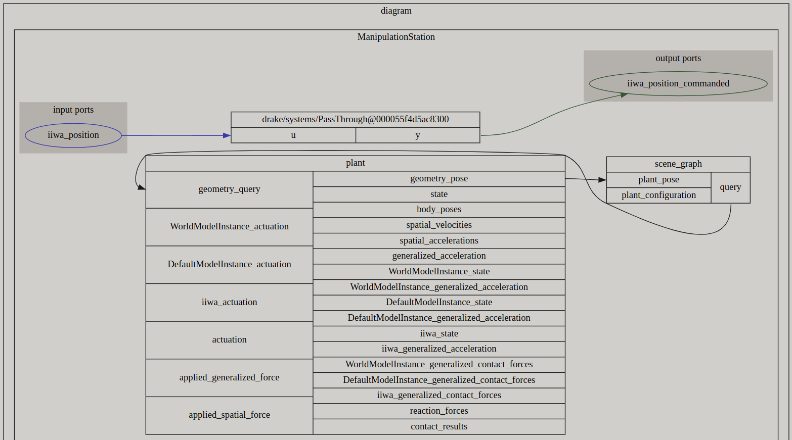

class 'pydrake.geometry.SceneGraph'.
The scenegraph defines relationships between 3D objects and each of their spatial properties.
The scene graph interacts with other components of a simulation, such as the

The SceneGraph system contains information about the geometry of a system, such as the location, size, and shape of objects. It also provides methods for querying the geometric properties of objects in the scene, such as their positions, orientations, and velocities. These queries are performed using the geometry_query object.
To connect these two systems, the Plant system receives geometric information from the SceneGraph through the geometry_query object. The Plant system uses this information to compute the physical properties/dynamics of objects, such as their positions, velocities, and forces.
For example, suppose we have a rigid body in the Plant system that is connected to a visual geometry in the SceneGraph. To compute the forces acting on the rigid body, the Plant system might first request information about the position and orientation of the visual geometry using the geometry_query object. It can then use this information to compute the forces acting on the rigid body due to interactions with other objects in the scene.